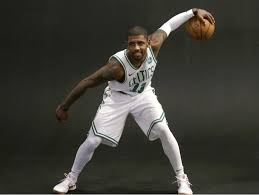

Dribbling a basketball efficiently requires a lot of hard work. Hand-eye coordination is much needed when dribbling a ball. It can takes months for people to become really skilled dribbling. One example is Kyrie Irving. He is widely reagrded as the best ball-handler in the NBA because of how well can dribble a basketball. When he practices, he always makes sure to spend a lot of time on dribbling. It is most likely the main reason he is the best at what he does
After learning basic dribbling, it becomes easier for people to more complex moves such as between the legs and behind the back.
A tutorial on simple dribbling. 